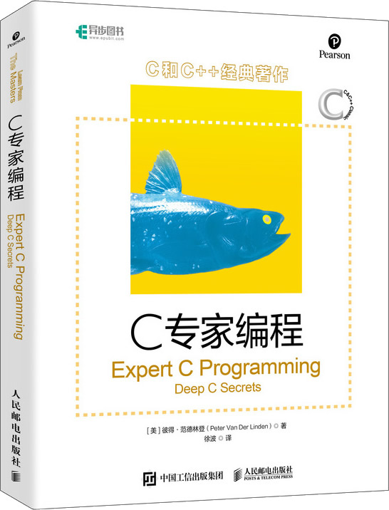

首页 > 书籍下载
《C专家编程》PDF下载（高清完整版）
|  | 作者：[美]彼得·范德林登（Peter Van Der Linden） |
| 译者：徐波 | |
| 出版时间：2020年09月01日 | |
| 出版社：人民邮电出版社 | |
| 书号ISBN：9787115521323 | |
| 总页数：276 |
这是一本非常经典的 C 语言进阶书籍，全书采用轻松、对话式的讲解风格，致力于让有一定 C 语言基础的程序员成为 C 语言方面的专家。
这里提供的是《C专家编程》的高清 PDF 下载，内容完整，附带目录标签。
这本书假设读者已经掌握了 C 语言的基础语法，在此基础上对 C 语言的历史、语法特性、声明和定义、数组、指针、内存等展开更加细致、深入的分析，进一步提高读者对 C 语言的理解。
作为一名老程序员，推荐每个想深入了解和学习 C 语言的程序员挤时间阅读这本书，一定收获满满。
下面是一位购买这本书的读者给出的评价：
C语言经典啊，多看看没毛病。属于难得的好书。
还有一个读者也给出了好评：这本书主要在讲一些比较深但是编程中经常能遇到的问题，非常不错。
书籍目录
- 第1章 C：穿越时空的迷雾 1
- 1.1 C语言的史前阶段 1
- 1.2 C语言的早期体验 4
- 1.3 标准I/O库和C预处理器 5
- 1.4 K&R C 8
- 1.5 今日之ANSI C 10
- 1.6 它很棒，但它符合标准吗 12
- 1.7 编译限制 14
- 1.8 ANSI C标准的结构 15
- 1.9 阅读ANSI C标准，寻找乐趣和裨益 18
- 1.10 “安静的改变”究竟有多少安静 22
- 1.11 轻松一下——由编译器定义的Pragmas效果 25
- 第2章 这不是Bug，而是语言特性 27
- 2.1 这关语言特性何事，在Fortran里这就是Bug呀 27
- 2.2 多做之过 29
- 2.3 误做之过 36
- 2.4 少做之过 43
- 2.5 轻松一下——有些特性确实就是Bug 51
- 第3章 分析C语言的声明 53
- 3.1 只有编译器才会喜欢的语法 54
- 3.2 声明是如何形成的 56
- 3.3 优先级规则 61
- 3.4 通过图表分析C语言的声明 63
- 3.5 typedef可以成为你的朋友 65
- 3.6 typedef int x[10]和#define x int[10]的区别 66
- 3.7 typedef struct foo{ ... foo; }的含义 67
- 3.8 理解所有分析过程的代码段 69
- 3.9 轻松一下——驱动物理实体的软件 71
- 第4章 令人震惊的事实：数组和指针并不相同 79
- 4.1 数组并非指针 79
- 4.2 我的代码为什么无法运行 79
- 4.3 什么是声明，什么是定义 80
- 4.4 使声明与定义相匹配 84
- 4.5 数组和指针的其他区别 84
- 4.6 轻松一下——回文的乐趣 85
- 第5章 对链接的思考 89
- 5.1 函数库、链接和载入 89
- 5.2 动态链接的优点 92
- 5.3 函数库链接的5个特殊秘密 95
- 5.4 警惕Interpositioning 99
- 5.5 产生链接器报告文件 104
- 5.6 轻松一下——看看谁在说话：挑战Turing测验 105
- 第6章 运动的诗章：运行时数据结构 111
- 6.1 a.out及其传说 112
- 6.2 段 113
- 6.3 操作系统在a.out文件里干了些什么 115
- 6.4 C语言运行时系统在a.out里干了些什么 117
- 6.5 当函数被调用时发生了什么：过程活动记录 119
- 6.6 auto和static关键字 123
- 6.7 控制线程 124
- 6.8 setjmp和longjmp 124
- 6.9 UNIX中的堆栈段 126
- 6.10 MS-DOS中的堆栈段 126
- 6.11 有用的C语言工具 127
- 6.12 轻松一下——卡耐基·梅隆大学的编程难题 130
- 6.13 只适用于高级学员阅读的材料 132
- 第7章 对内存的思考 133
- 7.1 Intel 80x86系列 133
- 7.2 Intel 80x86内存模型以及它的工作原理 137
- 7.3 虚拟内存 141
- 7.4 cache存储器 144
- 7.5 数据段和堆 148
- 7.6 内存泄漏 149
- 7.7 总线错误 153
- 7.8 轻松一下——“Thing King”和“页面游戏” 159
- 第8章 为什么程序员无法分清万圣节和圣诞节 163
- 8.1 Portzebie度量衡系统 163
- 8.2 根据位模式构筑图形 164
- 8.3 在等待时类型发生了变化 166
- 8.4 原型之痛 168
- 8.5 原型在什么地方会失败 170
- 8.6 不需要按回车键就能得到一个字符 173
- 8.7 用C语言实现有限状态机 177
- 8.8 软件比硬件更困难 178
- 8.9 如何进行强制类型转换，为何要进行类型强制转换 181
- 8.10 轻松一下——国际C语言混乱代码大赛 183
- 第9章 再论数组 193
- 9.1 什么时候数组与指针相同 193
- 9.2 为什么会发生混淆 194
- 9.3 为什么C语言把数组形参当作指针 199
- 9.4 数组片段的下标 202
- 9.5 数组和指针可交换性的总结 203
- 9.6 C语言的多维数组 203
- 9.7 轻松一下——软件/硬件平衡 209
- 第10章 再论指针 213
- 10.1 多维数组的内存布局 213
- 10.2 指针数组就是Iliffe向量 214
- 10.3 在锯齿状数组上使用指针 217
- 10.4 向函数传递一个一维数组 220
- 10.5 使用指针向函数传递一个多维数组 221
- 10.6 使用指针从函数返回一个数组 224
- 10.7 使用指针创建和使用动态数组 226
- 10.8 轻松一下——程序检验的限制 231
- 第11章 你懂得C，所以C 不在话下 235
- 11.1 初识OOP 235
- 11.2 抽象——取事物的本质特性 237
- 11.3 封装——把相关的类型、数据和函数组合在一起 238
- 11.4 展示一些类——用户定义类型享有和预定义类型一样的权限 239
- 11.5 访问控制 240
- 11.6 声明 241
- 11.7 如何调用成员函数 243
- 11.8 继承——复用已经定义的操作 245
- 11.9 多重继承——从两个或更多的基类派生 249
- 11.10 重载——作用于不同类型的同一操作具有相同的名字 250
- 11.11 C 如何进行操作符重载 250
- 11.12 C 的输入/输出（I/O） 251
- 11.13 多态——运行时绑定 252
- 11.14 解释 253
- 11.15 C 如何表现多态 254
- 11.16 新奇玩意儿——多态 255
- 11.17 C 的其他要点 256
- 11.18 如果我的目标是那里，我不会从这里起步 257
- 11.19 它或许过于复杂，但却是可行的方案 259
- 11.20 轻松一下——死亡计算机协会 263
- 11.21 更多阅读材料 264
书籍下载
一键登录，免费下载完整版 PDF，文件名称：《C专家编程》.pdf